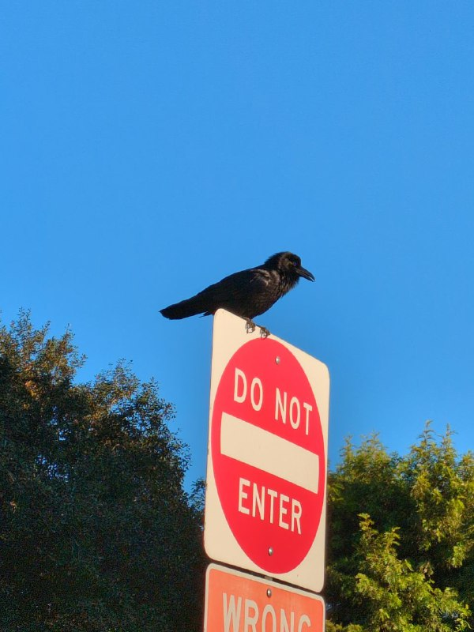

Anish Chedalavada's Homepage
About Me:
I am a fifth year PhD student and Teaching Assistant in the Department of Mathematics at Johns Hopkins.
- Office: Krieger 211
- E-mail: (a)xolotl (c)arnivorous (hedal1@jh.edu).
- Curriculum Vitae
Research:
My current research focus is in spectral algebraic geometry and tensor-triangulated geometry. I am broadly interested in homotopy theory and the areas of geometry and algebra with which it interacts.
Preprints:
Higher Zariski geometry, joint with Ko Aoki, Tobias Barthel, Tomer Schlank, and Greg Stevenson.
We revisit the classical constructions of tensor-triangular geometry in the setting of stably symmetric monoidal idempotent-complete \(\infty\)-categories, henceforth referred to as 2-rings. In this setting, we produce a Zariski topology, a Zariski spectrum, a category of locally 2-ringed spaces (more generally \(\infty\)-topoi), and an affine spectrum-global sections adjunction, based on the framework of "\(\infty\)-topoi with geometric structure" as developed by Lurie in [DAGV]. Using work of Kock and Pitsch, we compute that the underlying space of the Zariski spectrum of a 2-ring recovers the Balmer spectrum of its homotopy category. These constructions mirror the analogous structures in the classical Zariski geometry of commutative rings (and commutative ring spectra), and we also demonstrate additional compatibility between classical Zariski and higher Zariski geometry. For rigid 2-rings, we show that the descent results of Balmer and Favi admit coherent enhancements. As a corollary, we obtain that the Zariski spectrum fully faithfully embeds rigid 2-rings into locally 2-ringed \(\infty\)-topoi. In an appendix, we prove a ``stalk-locality principle'' for the telescope conjecture in the rigid setting, extending earlier work of Hrbek.
Affineness and reconstruction in higher Zariski geometry, (Draft, to be posted soon)
We explain how the geometric framework introduced in [HZG] provides a universal property for the 2-rings of perfect complexes on qcqs spectral or Dirac spectral scheme. As an application, given a spectral or Dirac spectral scheme \(X\), this will give rise to a comparison morphism from the Zariski spectrum of \(\mathrm{Perf}_{X}\) to \(X\) itself; this supplies a new proof of the Balmer and Neeman-Thomason reconstruction of a qcqs scheme \(X\) from its space of thick subcategories, assuming the result for noetherian rings. As another application, we find spectral and Dirac spectral enhancements of support varieties arising for 2-rings in representation theory which “geometrize” the 2-rings that produce them. For example, given a finite group \(G\) over a field \(k\), this produces a “spectral support variety” \(\mathcal{V}_{G}\) such that \(\mathrm{Perf}_{\mathcal{V}_{G}}\) maps into the stable module category of \(kG\). We derive these results as a corollary of a general affineness criterion for 2-schemes, which states that 2-schemes are affine if and only if they are quasicompact and quasiseparated.
In preparation:
- A splitting of the assembly map for the equivariant K-theory of spaces, joint with Maxine Calle, David Chan, and Andres Mejia.
- Torsion-free endotrivial modules via spectral algebraic geometry.
Research Talks:
- A derived refinement of a classical reconstruction theorem in tt-geometry, Oberwolfach Workshop 2338a: Tensor-Triangular Geometry and Interactions. [Notes], [Extended Abstract for Oberwolfach Report].
Teaching:
Past teaching:
JH
- Fall 2025: Instructor for AS.110.113 Honors Single-Variable Calculus [Lecture Notes]
- Fall 2024: Instructor for AS.110.225 Putnam Problem Solving Lab
- Fall 2023: Grader for AS 110.616 Algebraic Topology, TA for AS 110.107 Calculus II for Life Sciences
UIC
- Spring 2023: TA for Math 160 Linear Algebra for Business and Math 121 (Precalculus)
- Spring 2022: TA for Math 181 (Calculus II)
- Fall 2021: Instructor for Math 109 (College Algebra Workshop). Feedback padlet here.
- Summer 2021: Instructor for Math 090 SEMW (College Algebra)
- Spring 2021: TA for Math 125 (Elementary Linear Algebra for Business)
- Fall 2020: TA for Math 181 (Calc II)
Notes:
I maintain a list of talks along with notes from various reading seminars that I have participated in here.
Important Links:
- Just Mathematics Collective - Our goal is to shift the global mathematics community towards justice, via genuine anti-racism, anti-militarism, and solidarity with the Global South.
- Spectra - The Association for LGBT Mathematicians.
- MathOverflow - a forum for research-related queries in math.
- the nLab - a community wiki for mathematics, especially from an n-categorical perspective.
- The Stacks Project - an open source textbook and reference work on algebraic geometry.
- Lectures on Abstract Algebra by Richard Elman - the only undergraduate algebra text I will ever recommend in good faith.
- Detexify - draw a math symbol and find the LaTeX code for it.